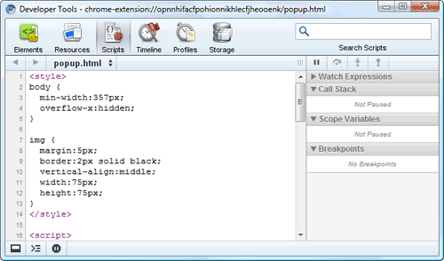
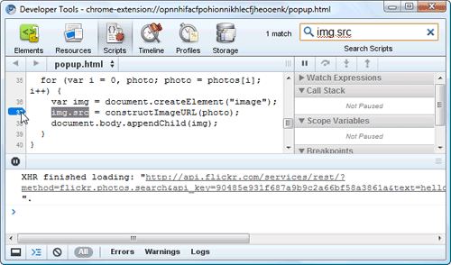
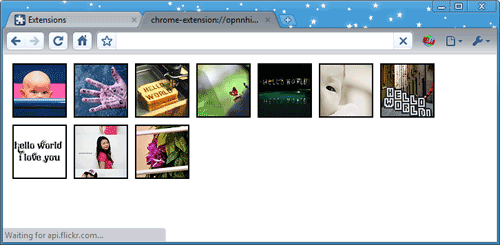

Tutorial: Debugging
true
This tutorial shows you how to use
Google Chrome's built-in developer tools
to view your extension's code,
display debugging output,
and interactively debug your extension.
Get the source code
To follow this tutorial,
you use a modified version of
the Hello World extension that was featured in
Getting Started.
-
Find your copy of the Hello World extension's files.
If you don't have a handy copy,
extract them from this
ZIP file.
-
Edit my_toolstrip.html so that it has the following code:
<script>
function helloWorld() {
var hwFile = 'hello_world.html';
console.log("in helloWorld()");
window.open(hwFile);
}
</script>
<div class="toolstrip-button" onclick="helloWorld();">
<span>Hello, World!</span>
</div>
The revised code has the same effect
but now has some debugging output,
thanks to the call to console.log().
Load and inspect the extension
-
Optional:
Close all your Google Chrome windows, except for one.
The fewer windows you have open,
the easier it'll be to debug the extension.
-
Go to chrome://extensions.
If the extension is already running, click Reload.
Otherwise, load the extension by clicking
Load unpacked extension
and choosing the folder that contains
the modified extension files.
-
In chrome://extensions,
click the Inspect link
next to my_toolstrip.html.
A Developer Tools window like this should appear:

Note:
If you have multiple browser windows open,
you'll see multiple copies of my_toolstrip.html
in chrome://extensions.
Each copy corresponds to a window —
or, more precisely, to an instance of the toolstrip.
-
If the Scripts button isn't already selected,
click it.
-
If my_toolstrip.html isn't already selected,
choose it from the list of scripts.
The result should be something like this:

Debug the extension
-
Set a debugging breakpoint at the
window.open() statement
by clicking 5 in the left column:

-
Click the Console button
(second from left, at the bottom of the Developer Tools window)
so that you can see both the code and the console.

-
Back in the main browser window,
click the Hello, World! button,
so that the extension begins executing.
You should see the output of
console.log()
along with the line number,
and execution should stop just before
the call to window.open().

The Call Stack area at the right of the tools window shows that
the helloWorld() method was called by an anonymous function
that was called by onclick.
Anywhere in the Call Stack or console that you see a file and line number
(for example, "my_toolstrip.html:4"),
you can click that text to see the relevant line of code.
-
In the upper right part of the tools window,
scroll down (if necessary) until you can see the local scope variables.
This section shows the current values of all variables in the current scope.
For example, you can see that
hwFile is a local variable
that has the value "hello_world.html".

-
Click the buttons at the upper right of the window
to resume execution or to step through the code.
Once the call to
window.open() returns,
the main browser window should open a new tab
that displays the contents of hello_world.html.
Now what?
Now that you've been introduced to debugging,
here are suggestions for what to do next:
-
Explore the developer tools to find more features
-
Try installing and debugging other extensions,
such as the
samples
For more ideas,
see the Now what? section
of Getting Started.